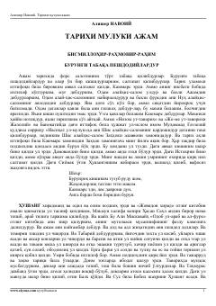

TMAlisher Navoiy qalamiga mansub qadimgi Eron podshohlari tarixi haqidagi tarixiy asar.
Ushbu asar Alisher Navoiy tomonidan yozilgan bo'lib, unda qadimgi Eron (Ajam) podshohlari va ularning hukmronlik davrlari haqida tarixiy ma'lumotlar keltiriladi. Muallif afsonaviy va tarixiy shaxslar, jumladan Kayumars, Hushang, Tahmuras va Jamshid kabi hukmdorlarning faoliyati hamda ularning davlat boshqaruvidagi o'rni haqida hikoya qiladi.